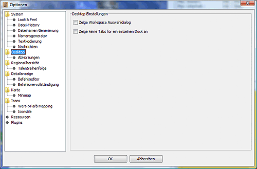
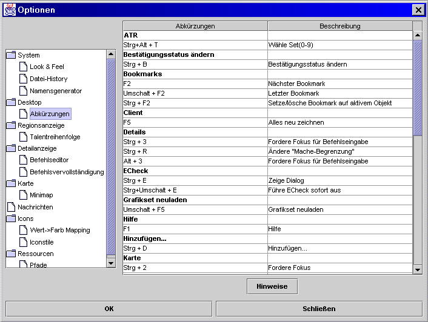

Hier stellt man den Desktop-Modus von Magellan ein.


Hier sind alle Tastenkürzel angezeigt, die innerhalb von Magellan Verwendung finden. Durch einen Doppelklick auf die gewünschte Option/Tastenkombination öffnet sich ein Fenster, in dem die neue Tastenkombination eingegeben werden kann.